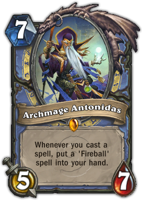
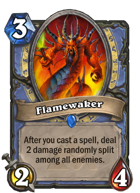
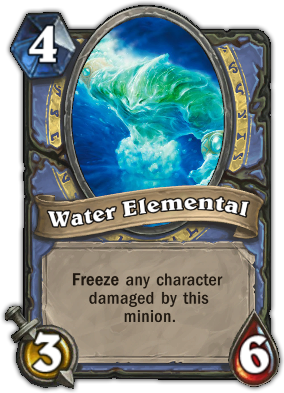

The Mage class is represented by Jaina Proudmoore. Mages are generally considered to be archetypal spell-casters and masters of magic. Mages excel at dealing damage instantly, either with very powerful single damage spells or strong area of effect spells. Mages generally try to get as many powerful damage spells as possible, both to clear away enemy minions (e.g. Blizzard) and finish off the opponent (e.g. Pyroblast). For this reason, cards that buff spell damage, such as Kobold Geomancer, are typically quite valuable in Mage decks. Not that all Mage decks are built around spell damage---with a versatile hero power and all manner of ways to change the shape of the board, Mages can also run heavy aggression and beatdown decks quite effectively.
|  |  |  |